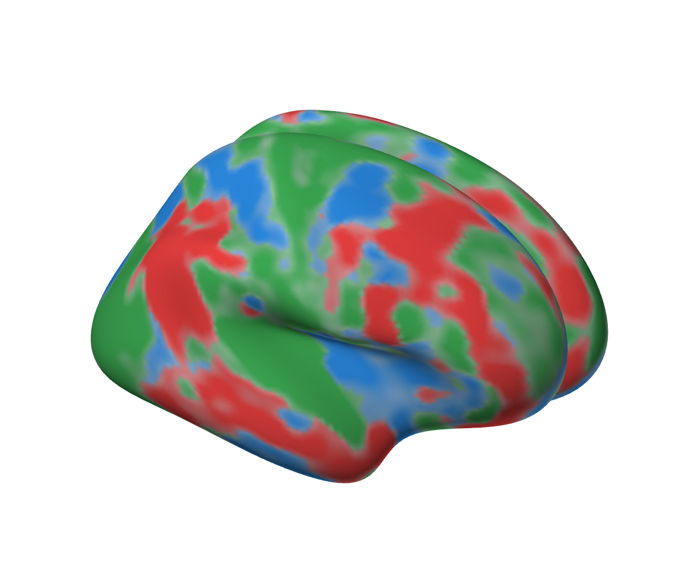
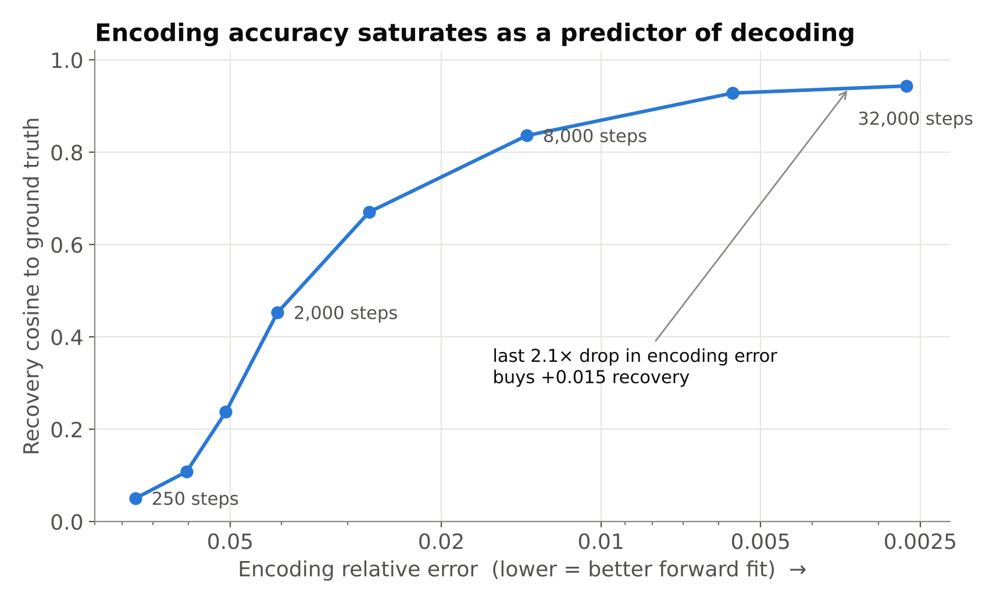
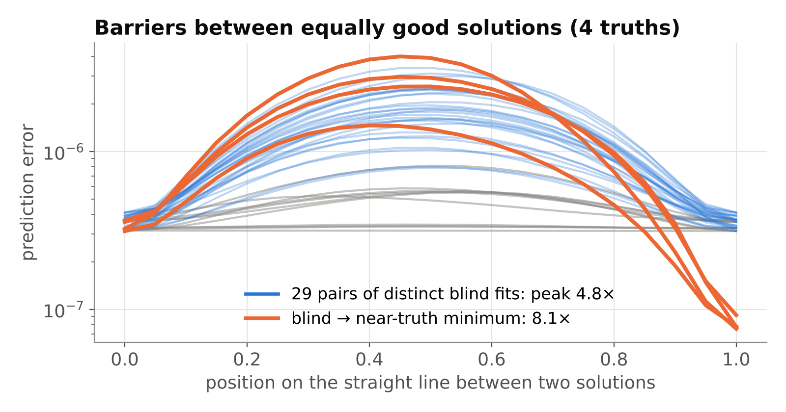
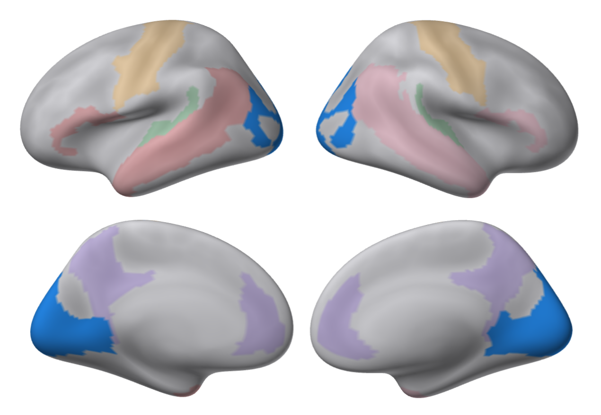
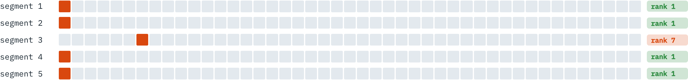

Project ID SBT_SW15 · BECE497J Project-I · VIT Vellore
Conditioning and Non-Convexity of Semantic Decoding by Inversion of Deep Brain Encoding Models
Abhranil Sarkar (23BML0077)
Tanisha Choudhuri (23BML0081)
Guide: Dr. Sharmila Nageswaran, SENSE
Can a near-perfect brain encoder be run backwards to read meaning out?

● text● audio● video
TRIBE v2 SENSITIVITY ON 20,484 CORTICAL POINTS
01 · The problem
Encoding is accurate. Decoding is assumed.
Stimulus
story audio + words
TRIBE v2 encoder
177 M parameters, frozen
Encoding: predicts brain activity accurately
Decoding by inversion: never tested on a deep foundation encoder
02 · The method
Invert the frozen network, against a known answer
177.21 M parameters
frozen
x: 32 × 1,152
optimised by Adam
Matches the release
r = 1.0000
Known ground truth:
exact error
04 · Key results · exact ground truth, 4 seeds
A better fit is not a better answer
28.4×
lower encoding error, while recovery saturates at 0.944

4.8×
error barrier between equally good fits: non-convex, separate minima

05 · Regions and real fMRI
Predictable is not recoverable
Recovery vs random vertices of the same size

most responsive network decodes worst; least responsive decodes best
Real fMRI · a story TRIBE v2 never saw (LeBel 2023)
4 / 5
segments identified among 45
(chance 2.2%)
0.02
cosine of the
reconstruction to the truth

Identification works. Reconstruction does not.
Encoding accuracy does not certify decoding.
Recoverability has to be measured.
Project ID SBT_SW15 · BECE497J Project-I
Abhranil Sarkar · Tanisha Choudhuri · Guide: Dr. Sharmila Nageswaran